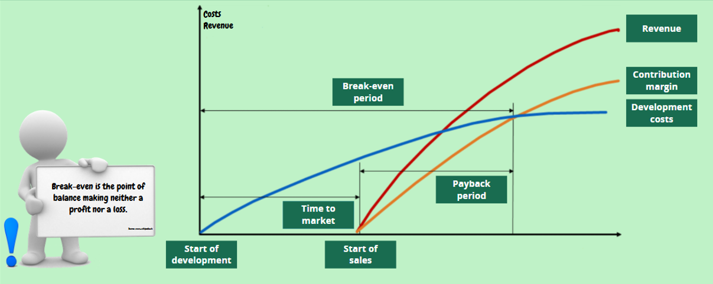
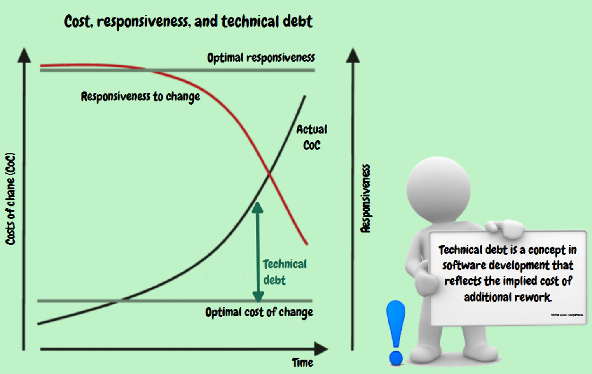

🟢 Business Understanding: Technical Debt & Long Term Costs
#Key concepts
- Break-even: The point where costs equal revenues (the project generates neither loss nor profit).
- Time to market: Time from the start of development to the launch of sales.
- Payback period: Time needed to repay the development investment from generated profit.

#Cost of change and flexibility (Cost vs. Responsiveness)
- Ideal state: Low cost of change (CoC = Cost of Change) and high ability to respond to requirements (Responsiveness).
- Reality: As time progresses, the cost of each modification increases and the ability to respond decreases. The space between the ideal and real curve forms technical debt.

#Technical debt
Consequence of "quick and dirty" shortcuts, when business pushes for quick deployment (new feature or bugfix) at the expense of proper design.
- Interest: Just like with financial debt, technical debt has a hidden cost (interest) in the form of growing instability, missing tests and increasingly expensive maintenance.
- Repayment: It must be continuously repaid by retrospective intervention (refactoring), like when you pay off a credit card at the end of the month so that interest does not accumulate.
#Sweet spot of architecture and long-term costs
Extreme approaches to design do not work:
- YAGNI (You Ain't Gonna Need It): No architecture in advance. Quick start, but in the long term extremely expensive due to rewriting.
- BDUF (Big Design Up-Front): Massive detailed analysis in advance. Extremely expensive right at the beginning and cumbersome to maintain.
- Sweet spot: The ideal point with the lowest long-term costs lies in the middle. George Fairbanks calls it "Just enough software architecture" (adequate risk-driven design).
#Software Craftsmanship
Solves the eternal conflict between Product Owner (wants features and speed) and developers (want well-crafted system and zero debt).
- The team functions as a guild of professionals that constantly defends the codebase against erosion.
- The foundation is professionalism, TDD (Test Driven Development), Clean Code, continuous refactoring and the ability to say "No" to bad shortcuts.
- The result is a state where the cost of change and flexibility do not diverge over time, the code remains healthy and management trusts the experts in the long term.
#Examples from practice: Technical debt and balancing priorities
1. NAMUR module (Failure analysis)
Presentation: In the older NAMUR project, we focused primarily on technical design perfection. From today's perspective, we missed the architectural Sweet spot and slipped towards BDUF (Big Design Up-Front).
Application of theory: We tipped the scales purely towards Well-Crafted System and underestimated Feature Development. This violated the principle #85 (Make a Strong Business Case). In retrospect, it was necessary to limit scope, define "Just enough architecture" and strictly monitor Time to market to avoid loss of trust from business.
2. Hexagonal C++ component (Confirmation of correct practice)
Presentation: Extensive rewrite of old C component showed that the technical solution alone is not enough if it is not supported by appropriate process management.
Application of theory: The project was successfully completed thanks to functional application of Host Leadership. In the role of Gatekeeper, the team was protected from pressure to introduce more "quick and dirty" fixes. In the role of Space Creator, space was ensured for stabilization of hexagonal architecture. Thanks to transparent communication about the need to repay technical debt, the project maintained full support of stakeholders even despite actual exhaustion of time reserve.